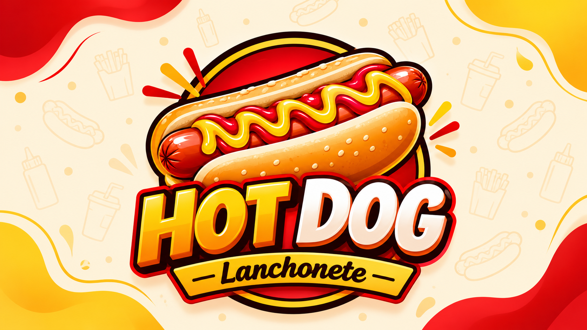

LanchoneteWeb
Sistema web desenvolvido para gerenciamento de uma lanchonete, utilizando Python, Flask, SQLite, JavaScript, HTML e CSS.

Sobre o projeto
O projeto LanchoneteWeb tem como o objetivo de aplicar na prática conceitos de desenvolvimento web, programação em Python e integração com banco de dados.
O sistema simula uma aplicação utilizada para gerenciamento de uma lanchonete, permitindo trabalhar com produtos, usuários e pedidos através de uma interface web.
Objetivo
Desenvolver uma aplicação web completa, integrando front-end, back-end e banco de dados em um único projeto.
Desenvolvimento
O projeto foi estruturado utilizando Flask para o back-end, SQLite para armazenamento dos dados e HTML, CSS e JavaScript para construção da interface.
Funcionalidades
- Sistema de login
- Autenticação de usuários
- Cadastro de produtos
- Integração com banco de dados
- Carrinho de compras
- Gerenciamento de sessões
- Estrutura de rotas com Flask
- Proteção das senhas
Tecnologias utilizadas
O que este projeto demonstra
Este projeto demonstra minha experiência prática na construção de aplicações web, desde a criação das interfaces até a implementação da lógica de back-end e persistência de dados.
Também representa minha evolução no uso de Python e Flask, trabalhando com organização de código, rotas, sessões, autenticação e banco de dados.